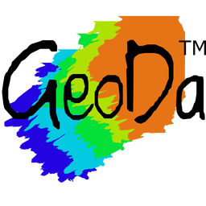

💼 Work Experience
📅 Nov. 2023 - Aug. 2025
Teacher and Researcher in Statistics
University of Lille (France)
Activities: Courses - Statistical programming, Descriptive Statistics, Linear models, Data analysis. - & Monitoring .
📅 Oct. 2020 - Aug. 2025
Ph.D. in Applied Statistics
University of Montpellier (France)
Topic: Contribution to the statistical analysis of geomorphological and spatial composition data: application to the study of coral reef communities.
📅 Feb. - Aug. 2020
Intern in Data Science
University of Lille (France)
Topic: Statistical analysis of community structure indicators in coral reef ecosystems.
📅 Jun. 2016 - Jul. 2017
Customer Service Representative
Premium Contact Center International (Senegal)
Role: Customer information, support and loyalty building.
📠Education
📅 2025
Ph.D. Applied Statistics
University of Montpellier (France)
📅 2020
M.S. Applied Mathematics and Computer Science
University of Lille (France)
📅 2017
M.S. Econometrics and Quantitative Finance
University Cheikh Anta Diop (Senegal)
🆠Certificates
ğŸ› ï¸ Data Analytics Toolbox
📊 Preparation & Exploration
- Data Wrangling: End-to-end ETL, robust cleaning, imputation, transformation, and outlier handling.
- Descriptive Analytics: Deep exploration through univariate, bivariate, and multivariate analyses.
- Dimensionality Reduction: PCA, FAMD, MFA, NMDS — simplifying complexity, revealing structure.
📈 Modeling & Forecasting
- Statistical & Time Series Modeling: ARIMA, ARCH/GARCH for trend detection and forecasting.
- Machine Learning:
- Regression: Linear, logistic, polynomial, neural networks.
- Classification: Decision trees, random forests, ensemble models.
- Clustering: K-means, CLARA, HCPC, KNN.
- Neural Architectures: Feedforward, deep learning.
- Regression: Linear, logistic, polynomial, neural networks.
🗺️ Spatial & Geostatistical Analysis
- Kriging, Cokriging, IDW — deriving insight from location-based data.
📊 Visualization & Communication
- Data Visualization: Clear, compelling graphics tailored to audience and context, creating dashboards.
- Automated Reporting: Reproducible, dynamic reports for stakeholders across domains.
☁️ Computational Infrastructure
- Scalable Computing: Cloud platforms, high-performance and parallel computing for large-scale data workflows.
🧰 Stack
IDE


Programming


Statistics softwares

Business Intelligence


Web


Communication